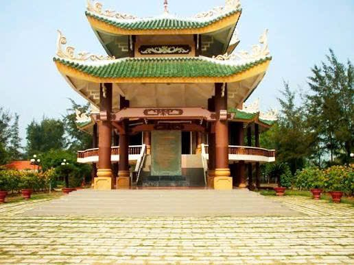
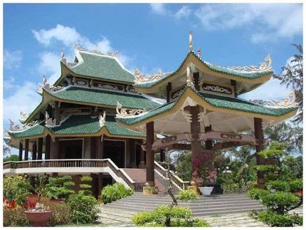
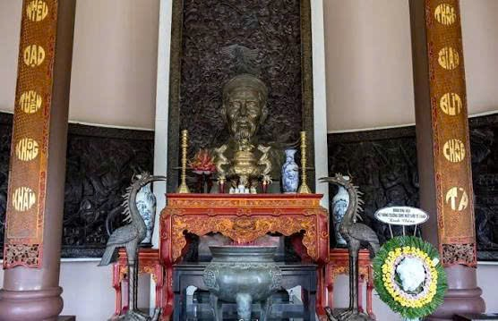
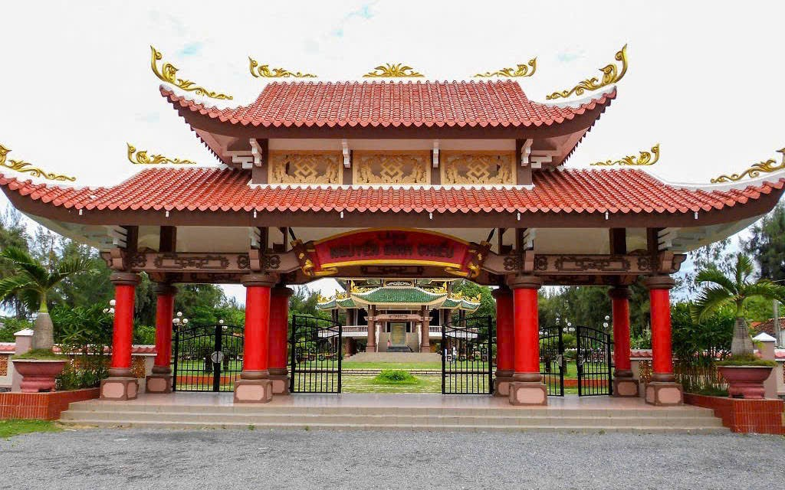

Tưởng niệm nhà thơ – danh nhân văn hóa tiêu biểu của dân tộc Việt Nam.
Đền thờ Nguyễn Đình Chiểu tọa lạc tại huyện Ba Tri, tỉnh Bến Tre – quê hương của nhà thơ yêu nước, nhà giáo và thầy thuốc nổi tiếng trong lịch sử Việt Nam. Ông là tác giả của nhiều tác phẩm văn học có giá trị lớn như “Lục Vân Tiên”, thể hiện tinh thần yêu nước, đạo đức và nhân nghĩa.
Khu đền được xây dựng vào thế kỷ XX nhằm tưởng nhớ và tri ân những đóng góp to lớn của ông cho nền văn hóa dân tộc. Đây không chỉ là di tích lịch sử mà còn là địa điểm giáo dục truyền thống, thu hút đông đảo học sinh, sinh viên và du khách đến tham quan.



